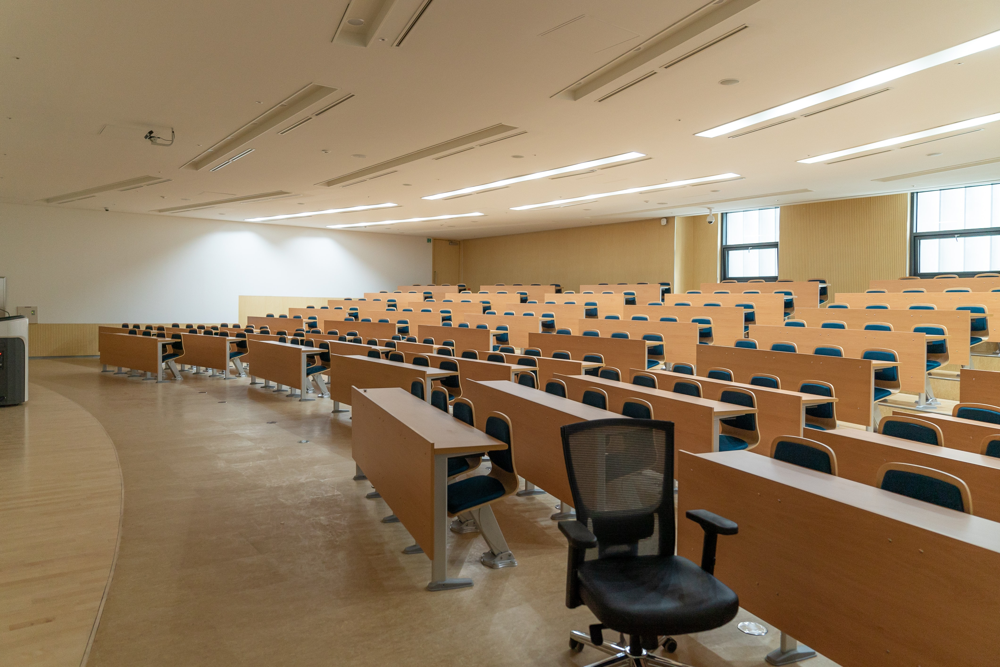

Playing the electric guitar is one of my favorite hobbies because it allows me to clear my mind. I become completely focus on the music that I love. It distracts me from my everyday worries. Music brings joy to my life.
Chee Her

Hello and welcome to my Web Development with HTML and CSS Module 12.3 Final. My name is Chee Her and I am in the Software Development
Degree program at Bellevue University. I transferred from local technical college and started attending Bellevue University in the Fall Semester of 2021.
Here you will learn a little bit about my hobbies and what I like to do on my free time. You will also learn about my personal experiences and work experience.
Lastly, at the bottom of the page, you will have an opportunity to email me if you have further questions.
Hobbies
Playing Guitar
Watching Movies
Movies are another hobby that I enjoy. I like to watch sci-fi movies. My reason for this is because it allows the creators to do anything they want. Sci-fi movies can break any barrier that we currently understand here on Earth.
Swimming
Swimming is another one of my favorite hobby which I do not get enough of. I do not have my own pool or live near a body of water. I can only swim when the opportunity presents itself. Although I am not the strongest swimmer, I can hold my own for a time if left in the middle of the ocean.
Experience
Military
I served four years in the United States Marine Corps from 2009 to 2013. While in the service, my Military Occupation Specialist was Small Arms Repair/Technician (MOS 2111). I was deployed to Afghanistan in 2010 along with a second deployment in 2012 as part of Operation Enduring Freedom.
Associates Degree
I got my associates degree in Software Developer in the fall of 2019 from my local technical college. This was the hardest part of my education as I knew little to nothing about computers. Towards the end of my second semester in the software developer program, something magically clicked in my head and I was able to understand everything I was doing. From then on, everything just went smoothly for me as I continued through the program.

Teacher Assistant
Upon graduating with my associate’s degree, I was selected to become one of the teacher assistant at the college. As a teacher assistant, I helped students with their assignments and created learning materials.
Contact Info
back to top